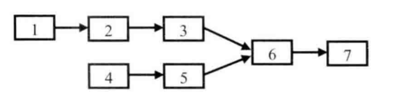

39. 数组中出现次数超过一半的数字
数组中有一个数字出现的次数超过数组长度的一半。请找出这个数字。例如，输入一个长度为9的数组{1，2，3，2，2，2，2，5，4，2}。由于数字2在数组中出现了5次。超过数组长度的一半。因此输出2；
40. 最小的k个数
输入n个整数，找出其中最小的k个数，例如输入4,5,1,6,2,7,3,8这8个数字，则最小的4个数字是1，2，3，4；
41. 数据流中的中位数
如何得到一个数据流中的中位数，如果从数据流中读取奇数个数值，那么中位数就是所有数值排序之后位于中间的数值。如果从数据流中读出偶数个数值。那么中位数就是所有数值排序之后中间两个数的平均值。
42. 连续子数组的最大和
输入一个整型数组，数组里有正数也有负数。数组中的一个或者连续多个整数组成一个子数组。求所有子数组的和的最大值。要求时间复杂度为O(n);
43. 1~n整数中1出现的次数
输入一个整数n，求1~n这n个整数的十进制表示1出现的次数。例如输入12,1~12这些整数包含1的数字有1,10,11和12，1一共出现的次数为5次。
44. 数字序列中某一位的数字
数字以012345678910111213141516的格式序列化到一个字符序列中。在这个序列中，第5位(从0开始计数)是5，第13位1，第19位时4等等。请写一个函数，求任意第n位对应的数字。
思考
一般的解决思路是不断累加数字，直到找到第几位。
我自己的优化思路，比如数字967，(967-99)*3 + （99-9）*2+ 9*1
45. 把数组排成最小的数
输入一个正整数数组，把数组里所有数字拼接起来排成一个数，打印能拼接处的所有数字中最小的一个。例如输入数组{3,2,321},则打印出这3个数字能排成的最小数字321323；
思考
直接的做法是求全排列进行比较。
另一种做法是要将数字最小的放在其前面，在首字相同，又要比较第二个的大小。这样就可以联想到，通过自定义一种比较规则，然后通过nlog(n)的时间里。将其排序出来，那么这个规则的定义与证明就是一个数学问题。
46. 把数字翻译成字符串
给定一个数字，我们按照如下规则把它翻译为字符串：0翻译成a,1翻译成b,25翻译成z,一个数字可能有多少个翻译。12258有5种不同的翻译，分别是bccfi,bwfi,bczi,mcfi,mzi,请编程实现以函数，用来计算一个数字有多少中不同的翻译方法。
思路
没想明白
47. 礼物的最大价值
在一个m*n的棋盘的每一格都放右一个礼物，每个礼物都有一定的价值。你可以从棋盘的左上角开始拿格子里的礼物，并每次向左或者向下移动一格，直到到达棋盘的右下角。给定一个棋盘及其上面的礼物，请计算你最多能拿到多少价值的礼物？
思考
我当前的结果。如何由前面的结果得来。而分治法是由一些子问题，在综合成大问题。
动态规划有时是由向大。因为基于原有小的已经算出来的值，取计算大规模的值。
这里当前的最大值，从上，从左而来。我需要比较从上的最大值+当前值，与从左而来的值+当前值 两个比较。以求出当前的最大值。也就是利用以前的结果计算当前的结果。
48. 最长不含重复字符的子字符串
从字符串中找出一个最长的不包含重复字符的子字符串，计算该最长子字符串的长度。假设字符串中只包含‘a'~'z' 的字符。例如 在字符串’arabcacfr‘中，最长的不含重复字符的子字符串’acfr'，长度为4;
思考
后面的依赖前面结果，很容易想到动态规划。
需要注意的是，动态规划的实现，可以考虑使用循环来实现。而不是使用递归。
49. 丑数(一点思路都没有)
我们把只包含因子2，3，5的数叫做丑数。求按从小到大的顺序的第1500个丑数。例如6,8都是丑数，但14不是，因为它只包含因子7，
50.第一个只出现一次的字符
字符串中第一个只出现一次的字符。在字符串中找出第一个只出现一次的字符。如输入abaccdeff，则只输出b；
思考
一种思路是从头开始然后遍历到最后，知道找到只有一次的字符。时间复杂度是O(N2)
另一种思路
遍历一次保存字符的次数。用hash表，以字符为key值，以出现的次数为值。最后再遍历一次hash表，就可以找出该首先出现只有一次的字符。时间复杂度是O(n)+O(n)，即最终是O(n)。
51. 数组中的逆序对
在数组中的两个数字，如果前面一个数字大于后面的数字，则这两个数字组成一个逆序对，输入一个数组，求出这个数组中的逆序对的总数。例如在数组{7,5,6,4}中，一共存在5个逆序对，分别(7,6),(7,5),(7,4),(6,4)和（5，4）;
思路（这个题我没有比较清晰的思路）
52. 两个链表的第一个公共节点
输入两个链表，找出它们的第一个公共节点。

思路一
从一个链表开始遍历，比较第二个链表。知道找到相同值即可。时间复杂度时O(N2)
思路二
假如我们从后面往前面遍历就好了。这样找到最后的不同就可以了。
我们想到，用两个辅助的栈，每个链表加到各自的栈里，然后同时出栈就可以直到最后一个相同为止。时间复杂度是O(N),空间复杂度也是O(N)
思路三
遍历链表一，几下总数，遍历链表二，几下总数，用长的向前走动两个节点数之差。然后同时相前走动，直到相同为止。这种是最好的思路。
总结
降低时间复杂度的方法是改用更高效的算法。比如用动态规划，用类似于快速排序的分区，将递归改为循环的实现（如果有重复的子问题）
第二种方法,用空间换时间，例如可以用hash表，